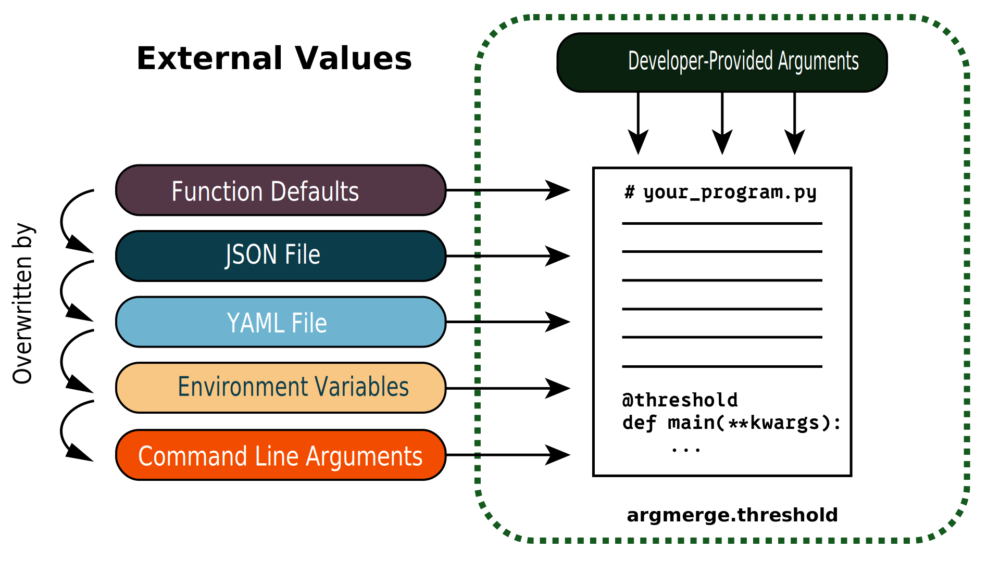

argmerge
Description
Customize how program defaults and overrides from config files, environment variables, and CLI arguments "cross the threshold" into your program.

We retrieve each possible source of program arguments as Python dictionaries and then perform dictionary updates between each source before passing the final dictionary to the wrapped function. Effectively:
source_1: dict
source_2: dict
source_1.update(source_2)
function(**source_1)
Installation
We recommend using uv for package management.
uv add argmerge
If you're using pip you can run
pip install argmerge
Usage
Code Example
While designed for main functions, you can ddd the @threshold decorator to any program that interfaces with external variables or files.
from argmerge import threshold
@threshold
def main(first: int, second: str, third: float = 0.0):
...
Hierarchy
We determined the hierarchy based on (our perception of) developer experience. The intent is for higher priority sources to correspond to the quickest sources to change. For example, we perceive changing a CLI argument quicker than changing an environment variable - etc.
| Level | Rank |
|---|---|
| Developer-provided | 100 |
| CLI | 40 |
| Environment Variable | 30 |
| YAML File | 20 |
| JSON File | 10 |
| Python Function Default | 0 |
FAQ
Why YAML over JSON?
We prioritized YAML above JSON is because we find it significantly easier to read because it has less "line noise". JSON contains copious amounts of brackets ({,}) and commas. These are the only two sources that can pass dictionaries in by default. Of course, passing in different Regular expressions for environment variables and CLI arguments could also capture dictionaries, if you want to figure that out.
Planned Future Work
For specific bite-sized work, you can take a look at our project's GitHub issues. ⚠️ Caution - this project is new and issues may be under-specified ⚠️
Validation
We want users to be able to validate the input arguments to their program using a PyDantic BaseModel. This would slot in after we collect the arguments from all the different sources.
Customizing @threshold
We provide ways to customize reading environment variables and CLI arguments with the env_prefix and cli_pattern parameters. If developers want to go a step further and pull values from external sources we haven't considered (like .cfg files), we would like to allow them to do so.
Databricks
Databricks offers a way to collect 'widgets' or 'secrets' in their notebooks at runtime and pass them into your program. This is cool. It also is higher-risk for not being able to exactly reproduce your workloads. This makes @threshold a very good candidate to merge arguments between the Databricks platform and other external sources. For example, though not recommended, it's possible to create widgets in a notebook that gets run in an asset bundle. Asset bundles can be run like CLI applications, which means you can pass arguments in from the CLI or the widgets.
Authentication
This is a tricky one, and we may not do it. Since we truly want to provide everything a program needs to run, this would include any authentication keys - think Database access keys or application API keys. The way we'd retrieve keys varies between cloud platforms, as well as non-cloud platforms. What may make the most sense is for us to build some sort of plugin system that allows users to bring their own authentication